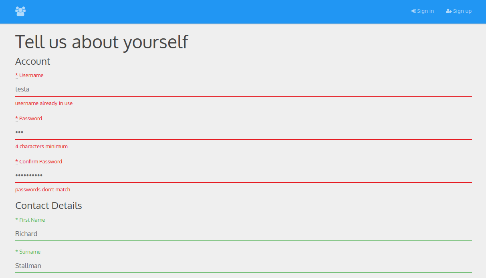
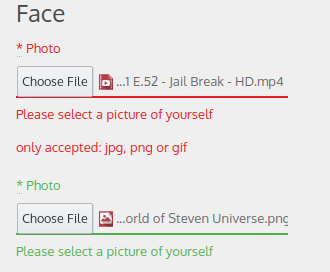
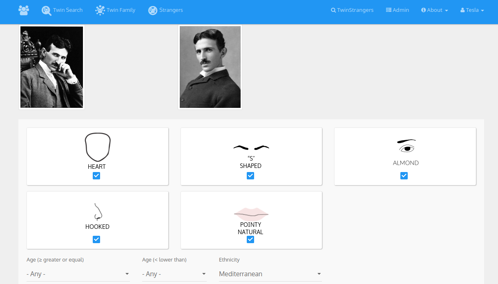
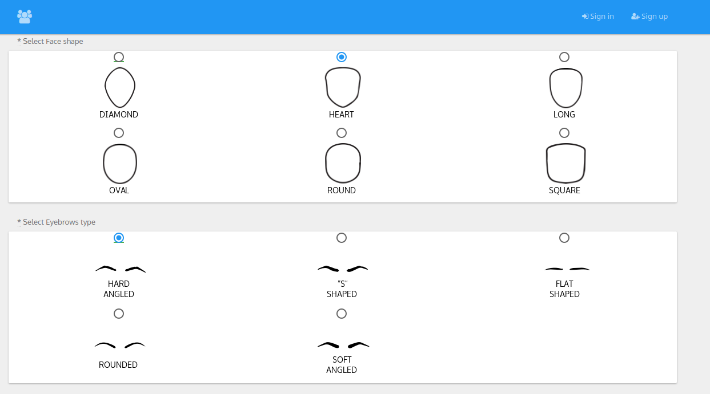
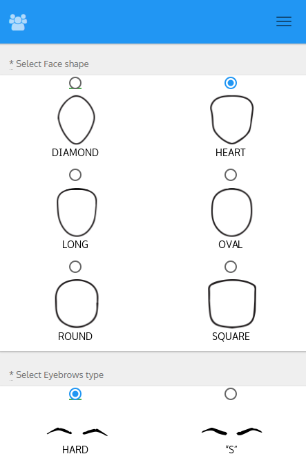
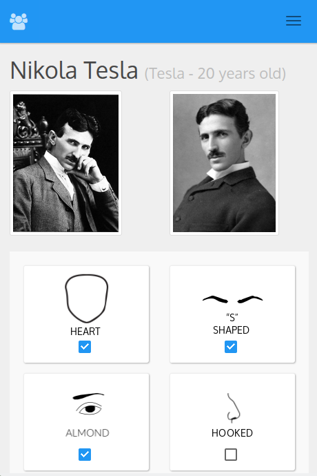
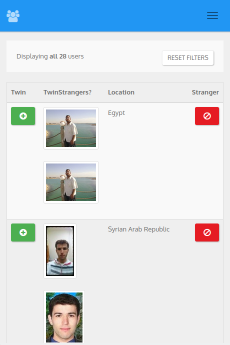

The sign-up page use jQuery Form Validator to check the form before being submitted to the server.
The user is only allowed to upload two photos of size < 2M. If the user tries to upload another file type she/he will be warned like so:
If a user does not fill in all the requiered fields, or make a mistake at some point (passwords/emails don’t match, username/email already taken, the photos uploaded are too big or bad file type). She/he will be sent back to the top of the page, without reloading the page.
Note
Those verifications are client-sided for a better ergonomie and to make life easier to the user. Keep in mind that all those verifications have to be made on the server side too. So if you need to implement another verification start by implementing it on the server side first.
When a user login to the website, she/he enter this page where she/he can look for their potential TwinStrangers using this filter. To increase the number of results a user can disable one or more facial features. Here if she/he unselect the eye shape option, she/he will be able to see users with or without an almond eye shape.
Note
A user cannot find an admin, a locked user or users of the other gender. The TwinStrangers and Admin Links in the navbar are not visible to normal users.
We use the theme Paper for bootstrap to give a nice Material Design touch to our website, without having to break the Bootstrap Layout.
Each facial feature is placed inside a Material Card to make a distinction between different features. Those options are in fact in the database, the user will not create a face shape instance but rather save the id of the one she/he selected on its table.
Bootstrap is the most popular HTML, CSS, and JS framework for developing responsive, mobile first projects on the web. See here for more informations on the Grid System.
Each facial feature is placed inside a Card to make a distinction between different features. The user should be able to see all the possible options per facial feature. We use BootStrap Grid system to display two columns on smaller displays.
When looking for their TwinStrangers on mobile, the users will be displayed their two photos side by side and their facial features in the filter as checkbox buttons. Note that the features being of different type we dissociate them visually using z-shadows.
In the result the buttons Twin(to save the user) and Strangers(to hide it from the query) are still visible and big enought to be clicked with fingers. The user can click on the photos to have a bigger resolution.
 